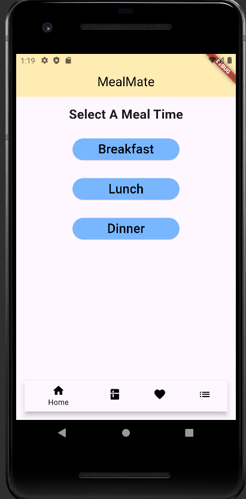
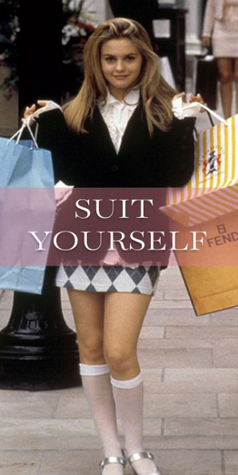
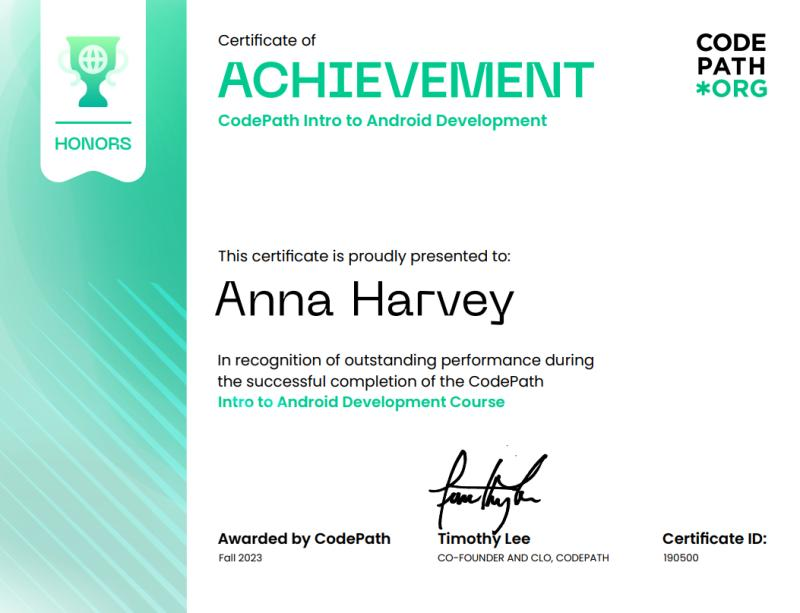

Hello! I am Anna Harvey👋
I am currently a senior studying Computer Science at Georgia State University. I have a passion for building innovative solutions and tackling complex problems through coding and technology. When I’m not immersed in programming, I enjoy playing pickleball and crocheting. I love staying active, learning new skills, and exploring creative hobbies in my free time. Feel free to explore my work and get a glimpse into my journey as a CS student!
My Work
My Projects

MealMate
A meal planning app to help you organize your recipes and grocery list.

SuitYourself
A meal planning app to help you organize your recipes and grocery list.
Certifications

Codepath Android Course Certification

Girls Who Code Accenture Work Prep
×